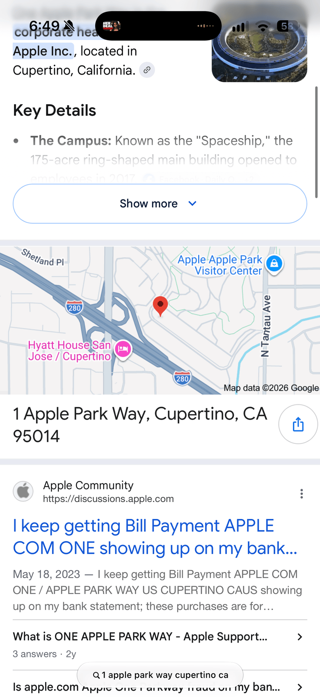
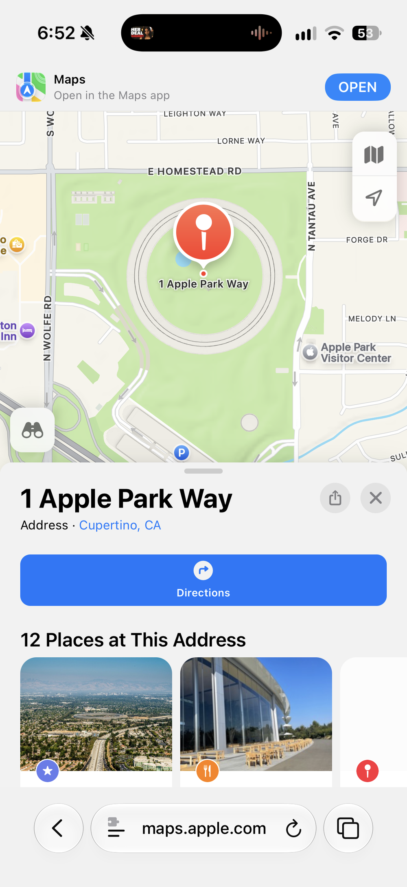

Google Maps links open in
Apple Maps
Directions
actually work
Shared links
too


Dinner here tonight?
maps.app.goo.gl/x7Qa
Draft: needs a Maps app capture with the route drawn
Draft: placeholder for a Messages capture